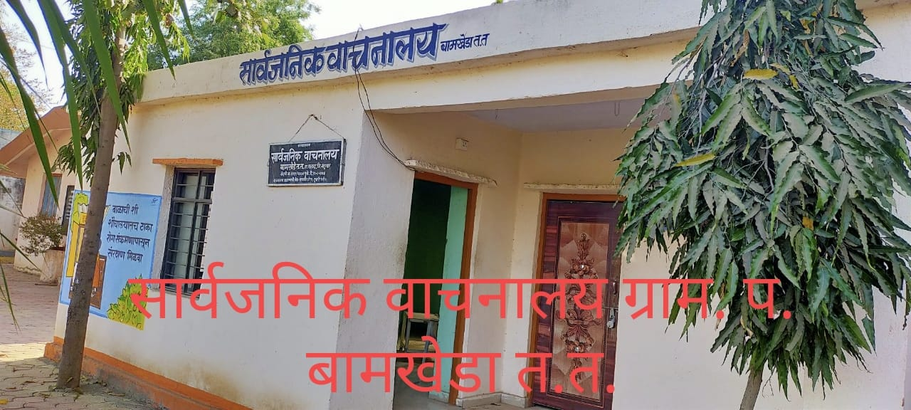
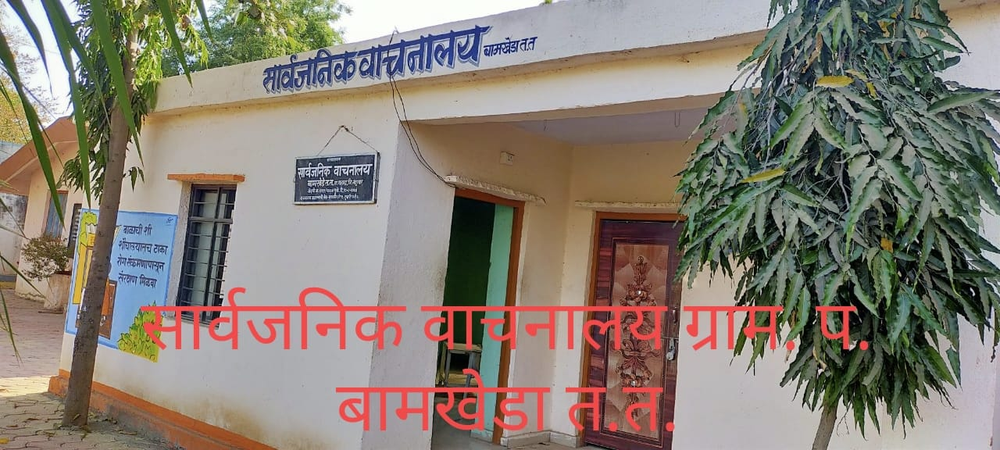

Facilities & Services
Click on any facility to see images and more details.
Schools
Primary & secondary schools. Local Anganwadi Centres for early childhood support.
Primary Health Centre (PHC)
PHC with Medical Officer and staff. ASHA and ANM workers at village level.
Water Supply
Community water tanks and household connections managed by Panchayat.
Sanitation & Waste
Public toilets, garbage bins, and 713 households with toilet coverage.
Post Office & Bank
Village Post Office and local bank/ATM access for financial services.
Community Facilities
Playground, community hall and cultural activity spaces managed by Panchayat.

 
